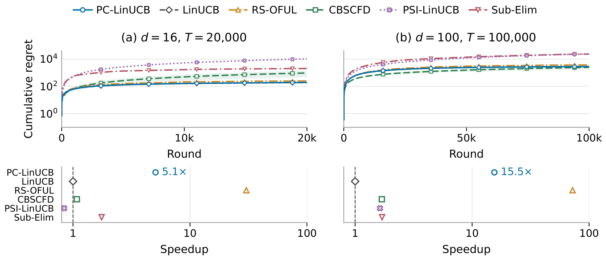
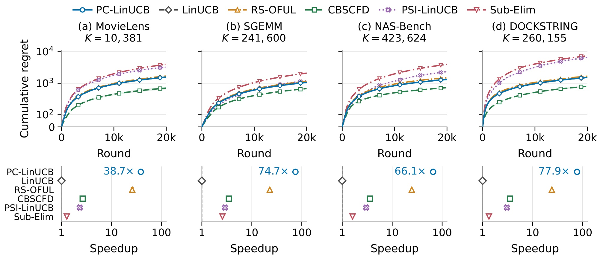
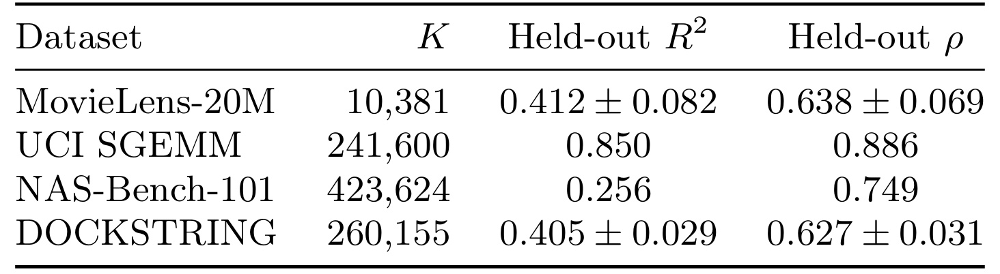
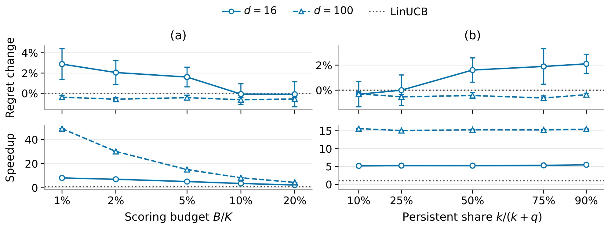
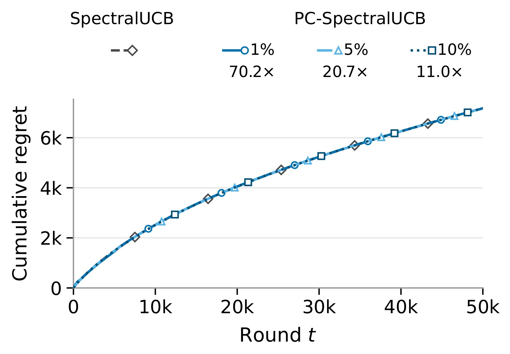

PC-LinUCB：用持久候选集合加速大规模线性 Bandit
《Accelerating Linear Bandits with Persistent Candidate Sets》研究一个很具体的在线决策瓶颈：动作很多，但每轮只需要执行其中一个，为什么还要把全部动作重新计算一遍乐观分数？论文由第一作者 Bingkui Tong 所在的 Mohamed bin Zayed University of Artificial Intelligence（MBZUAI）牵头，与 HSE University、RIKEN AIP 合作，作者还包括 Daria Korovaitceva、Marina Sheshukova、Sergey Samsonov 和 Junpei Komiyama。论文于 2026 年 10 月 9 日首次公开，本次精读日期为 2026 年 10 月 13 日，唯一论文入口为 arXiv:2610.13407。本轮未核验到独立公开实现入口；以下结果来自作者论文，未独立复现。
在线性 Bandit 的大型固定动作集合上，穷举乐观评分每轮需要评价全部动作，动作数越大，选择成本越高。缩小评分集合又会限制可选动作，因此必须同时保留已经发现的有希望动作，并给集合外的动作持续进入候选的机会。
1. 背景和问题
从估计奖励转向计算选择成本
线性 Bandit 通常用一个共享参数描述所有动作的平均奖励。系统每轮选择一个动作，收到带噪奖励，再更新参数估计。和监督学习一次性拟合数据不同，Bandit 的数据由自己此前的决策产生：一直选择当前估计最高的动作，可能永远看不到被低估的动作；过多尝试不确定动作，又会损失当期收益。LinUCB 用“预测均值加置信上界”表达这种探索与利用的折中，奖励看起来高或者不确定性大的动作，都可能被选中。
论文关心的困难不在于这个原则是否合理，而在于它的直接实现会逐轮扫描整个动作库。如果动作数为十万、百万，即使共享线性模型的参数量不大，每次评价一个动作仍要计算特征在逆协方差矩阵下的范数。密集矩阵实现中，这个二次型需要与特征维度平方成比例的计算；动作总数再乘一次，就成为全量动作评分的主成本。用户、推荐内容、广告候选可以帮助理解大动作集合的动机，但本文的正式问题比真实广告系统简单：它没有请求特征变化，也没有持续上新、预算、约束或者用户群体切换。
已有加速思路可以从两个维度区分。第一类降低单个动作的评分成本，例如随机投影、矩阵草图和低秩近似。这类技术改动的是参数或置信矩阵的表示，仍可能需要给所有动作打分。第二类减少需要评价的动作数量，例如子线性检索、结构化动作搜索和子集选择。PC-LinUCB 属于第二类：它保留普通共享线性估计器，把每轮真正参与评分和选择的动作数限制为一个小预算。这里的收益来自“少评多少个动作”，而非“每个动作一定评得更便宜”。
直接每轮均匀抽取一个小候选集合，虽然减少计算，却会把上轮很有希望的动作随手丢掉。即使参数估计越来越准，最优动作仍可能只有小概率出现在本轮候选中。反过来，永久保留初始或早期看好的动作，也可能把未知高价值动作锁在集合外。论文使用持久活跃集合与随机挑战者分工：活跃集合承担记忆和保留，挑战者承担持续发现。这两个预算的含义不同，不能只把总候选数缩小后假设学习性能自然不变。
固定动作、静态特征与伪遗憾
本文假设共有固定的若干动作，每个动作拥有一个始终不变的已知特征向量，所有动作的平均奖励由同一个未知且固定的参数生成。形式上，原文的问题定义为：
符号解释：$x_i$ 是动作 $i$ 的 $d$ 维特征，$\theta^\star$ 是真实共享参数，$\mu_i$ 是该动作的平均奖励；$I_t$ 是第 $t$ 轮选择的动作，$Y_t$ 是实际观察奖励，$\eta_t$ 是条件次高斯噪声；$\mu^\star$ 是所有动作中最大的平均奖励，$T$ 是轮数，$R_T$ 是累计伪遗憾。伪遗憾累计的是均值差，排除了具体噪声样本带来的波动；它不是点击数、总收入或真实用户满意度。作者还假设特征范数和参数范数有上界，平均奖励位于负一到一之间，使单轮遗憾最多为二。
这个定义决定了历史分数能够被重复使用。一个动作今天和昨天的真实平均奖励相同，特征也相同，过去有效的乐观上界才有机会继续有效。共享参数使一个动作的反馈还能改善其他动作的奖励估计，这又解释了为什么不必逐一试遍全部动作就能形成较好排序。如果换成每轮用户上下文不同的 contextual bandit，某个动作在旧请求上的上界并不自动覆盖新请求；如果商品特征随时间更新，动作标识相同也不意味着奖励函数相同。论文在局限章节明确承认这种依赖。
还需要区分两个不同事件。最优动作没有出现在候选中，并不代表候选里面没有任何值得探索的动作。一些次优动作的置信上界仍可能高于最优均值，选择它们的遗憾可以通过置信宽度控制。作者因此定义“alive”动作，含义是其存储的裁剪分数仍不低于最优均值；这个阈值用于理论分析，算法本身不知道最优均值。真正产生额外发现项的是整个刷新候选集合都没有 alive 动作的轮次，而非所有遗漏最优动作的轮次。把二者混在一起，会误读上界也会误读后面的下界。
本文最值得观察的是计算与访问限制如何分开计价。标准学习误差仍随维度、轮数和置信水平变化；新增代价来自集合外动作何时被随机挑战者触达。作者证明在固定置信水平下，额外发现项不随轮数增长，同时证明即使已经知道哪个动作最优，只要它尚未被允许进入候选，就仍然无法选择它。因而“更少评分但性能相近”不是没有代价的免费午餐，而是一个带显式访问成本的折中。实验中观察到的小遗憾变化，需要放在这个随机发现机制、固定环境和足够长运行轮数的条件下理解。
这里还有一个容易忽视的计算条件：动作库规模大，并不意味着每一轮都需要重新学习一个同样大的模型。共享线性参数的更新规模主要由特征维度决定，昂贵步骤是把这个已更新的模型逐个作用到全动作库。候选缩减正好抓住二者不对称的地方，因此它可以在不改变反馈次数的情况下节约选择计算。若系统瓶颈实际位于特征获取、外部调用或者反馈等待，减少上界评价就未必带来同等响应加速。论文实验专门在已有特征上测量在线循环，不能替代针对业务链路的瓶颈定位。
活跃集合的初始化也影响早期访问困难。算法允许任意大小正确的初始集合，理论下界则故意考察唯一最优动作不在其中的情形；如果初始集合碰巧含有最优动作，几何等待障碍就不能按同一条件使用。实验随机初始化提供一个常规起点，没有给出适应所有初始排序质量的结论。来自旧系统的高质量候选可以改变初期表现，但也可能把早期错误集中保留；均匀挑战仍是离开旧判断的渠道。因而本文问题不只是用更小数组进行计算，还包括在有限访问预算下维持一个能够纠错的候选状态。
2. 方法
2.1 固定线性环境中的置信分数
PC-LinUCB 的奖励估计沿用正则化最小二乘与椭球置信集合，不重新定义一个复杂模型。观察选中动作的反馈后，系统更新设计矩阵和奖励充分统计量：
符号解释：$\lambda>0$ 是正则化参数，$I_d$ 是单位矩阵，$V_t$ 汇总已选择特征的二阶信息，$b_t$ 汇总特征与奖励的乘积，$\widehat\theta_t$ 是共享参数估计。初始矩阵为 $\lambda I_d$，初始向量和估计均为零。更新对象只有本轮实际执行的动作；候选集中的其他动作只是被评分，并没有凭空获得奖励标签。因而候选预算主要改变决策访问和计算，不直接改变每轮反馈条数。
已知总轮数时，作者使用覆盖整个运行区间的固定置信半径，以及相应上下置信分数：
符号解释：$R$ 是噪声的次高斯尺度，$L$ 和 $S$ 分别约束特征与参数范数，$\delta$ 是估计置信失败概率，$\beta$ 控制探索强度；$U_t(i)$ 和 $L_t(i)$ 分别为动作均值的上下界。平方根项是椭球下的不确定性，方向上采样越充分，通常越小。标准置信事件上，真实均值同时落在所有这些区间内，但原始 $U_t(i)$ 不要求随时间单调下降：估计均值变化可以让一个动作的上界重新上升。这个非单调性正是论文下一步需要额外处理的问题。
2.2 持久候选与单调裁剪更新
算法维护大小固定为 $k$ 的活跃集合。第 $t$ 轮先从其余 $K-k$ 个动作中均匀、无放回抽取 $q$ 个挑战者，与上一轮活跃集合合并。只给这些候选评价新的 UCB，再将动作存储分数替换为历史分数和新 UCB 的较小者：
符号解释：$A_{t-1}$ 是上一轮活跃集合，$B_{t-1}$ 是非活跃集合，$R_t$ 是本轮挑战者集合，$D_t$ 是大小为 $k+q$ 的候选集合，$\widetilde U(i)$ 是跨轮存储的裁剪分数。这里的 $R_t$ 是集合符号，与累计遗憾 $R_T$ 的含义由上下文区分。评分必须取历史上界与新上界的最小值，不能换成每轮直接覆盖的新 LinUCB 分数。只要各历史上界在置信事件上都不低于真实均值，取最小值仍保留乐观性；同时存储分数只能下降，为“死去的动作不再复活”的证明提供条件。
刷新之后选择候选内裁剪分数最高的动作，获取它的奖励。原文 Algorithm 1 的顺序是：评分与裁剪、选择并执行、用这些刷新后的分数保留候选内最大的 $k$ 个动作成为下一轮活跃集合，最后更新 $V_t$、$b_t$ 和参数估计。保留决策使用的是本轮反馈到来前构造的分数，没有用刚收到的奖励再给整批候选重算一次。下一轮才会在新估计上重新评价活跃动作和新挑战者。明确更新顺序有助于复现，也避免把候选保留写成一次额外全量刷新。
持久集合并不意味着动作永不淘汰。一个原活跃动作的裁剪分数下降后，可能被挑战者挤出前 $k$ 名；离开集合后，它的历史分数仍保留，将来作为挑战者被抽到时继续与新上界取最小值。最优动作在置信事件上始终 alive，却不需要宣称一旦发现便永久被选中。保留高分候选与保留一条永不下降的历史评分是相反概念：本方法保留的是可以持续下降的上界，借此排除已不够乐观的动作，而不是让早期高分成为不可修正的特权。
每个密集评分需要二次型计算，所以评分部分从全量 $O(Kd^2)$ 降到 $O((k+q)d^2)$。初始化仍给所有动作设置初始分数，特征与分数存储也与动作数有关，不能把评分复杂度写成系统总成本完全没有 $K$。模型更新和候选维护还有各自开销；具体采样数据结构、取前若干名与内存访问也会影响常数。原文实验特意使用密集评分来隔离动作数收益，而静态全量 LinUCB 可以通过 Sherman–Morrison 缓存将单个置信成本降到线性维度，但每轮要刷新全部动作缓存。由此，本文倍率是指定实现对比下的结果，不能直接套到已经深度优化的全量实现。
2.3 学习成本、发现成本和访问下界
证明的第一层把动作按照裁剪分数是否覆盖最优均值划为 alive 集合。每次最小值更新使 alive 集合只能缩小，而最优动作始终 alive。候选内只要还有 alive 动作，最大裁剪分数的选中动作也具有足够乐观的上界，单轮遗憾可被上下界宽度控制；全候选都死去时则用平均奖励区间给出的最坏上界二。于是累计遗憾被分解为：
符号解释：$S_t$ 是刷新后的 alive 集合，$w$ 是置信宽度，$\|x\|_M=\sqrt{x^\top Mx}$，$N_T^{\mathrm{empty}}$ 是刷新候选与 alive 集合交集为空的轮数。前一项是通常的学习代价，后一项是部分访问特有的额外代价。注意 alive 是证明用集合，不是要求系统预先知道最优均值再过滤候选。估计误差主要由椭圆势引理约束，而发现误差需要分析随机挑战者何时接触剩余 alive 动作。
作者用非活跃 alive 数量与空候选轮数构造一个非负超鞅。若 $m_t$ 表示非活跃 alive 个数，$\rho=1-q/(K-k)$，势函数为 $W_t=\rho^{-N_t^{\mathrm{empty}}}m_t$。被抽中的动作可能因为刷新而死亡，也可能存活并进入活跃集合；两种变化一起使势函数的条件期望不增。再用最大值不等式得到空候选计数尾界，而不是把每天抽样独立误差简单累加。由此原文无间隙和有间隙上界分别为：
符号解释：$\delta'$ 是发现项的额外失败概率，联合成功概率至少为 $1-\delta-\delta'$，其余符号与前文相同。第一项保留线性 Bandit 的维度与轮数依赖；第二项显示更多挑战者会缩短发现等待。固定 $\delta'$ 时，该新增项不随 $T$ 增长，但第一项中的置信半径仍依赖轮数，不能把整个累计遗憾说成常数。
符号解释：$\Delta_{\min}$ 是所有次优动作与最优均值的最小正差距，有间隙上界要求存在次优动作。它用差距换取更好的轮数依赖，若动作之间差距很小，这个界就可能很松。两条界的发现项相同，凸显作者把奖励参数学习与候选访问拆开的目的。若为了期望界把失败概率设为 $1/T$，发现项中的对数会重新含轮数；实验也使用 $\delta=1/T$，因此“固定置信下不随轮数增长”必须带上置信条件。
第二层证明把参数学习彻底拿掉：假设唯一最优动作一开始在活跃集合外，就算策略已经知道它是谁，也要等挑战者将它抽出来才能选择。每轮触达概率为 $q/(K-k)$，首次出现服从几何等待，原文访问遗憾为：
符号解释：$\Delta$ 是所有次优动作差距的最小值，$R_T^{\mathrm{access}}$ 是首次可访问前不可避免的遗憾下界，$S_{\mathrm{nominal}}$ 是仅按评分次数计算的名义加速。固定差距、运行足够长且挑战预算显著小于非活跃数时，等待成本至少为 $(K-k)/q$ 量级；当 $q=K-k$ 时每轮全访问，访问项消失。该下界约束一整类均匀挑战策略，而非只针对本文估计器。它也不是空候选计数的下界：最优动作缺席时，候选仍可能有次优 alive 动作，所以不能宣称上面的发现项已被精确匹配。
3. 实验结果
3.1 合成环境中的时间与遗憾折中
作者比较 PC-LinUCB、全量 LinUCB、很少切换的 RS-OFUL、矩阵压缩方法 CBSCFD 与 PSI-LinUCB，以及带 HNSW 候选检索的 Sub-Elim。所有方法使用统一的 Bandit 级正则和探索参数，方法专有超参数采用固定代表配置，没有针对每个数据集逐一调到最优。合成动作与真实参数独立从单位球面采样，噪声标准差为零点零五，动作数均为一万。两组设置分别是十六维、两万轮，以及一百维、十万轮；PC-LinUCB 每轮保留二百五十个活跃动作并抽二百五十个挑战者，总预算占百分之五，进行十次配对重复。

Figure 1 上半部分是累计伪遗憾曲线，下半部分是相对全量 LinUCB 的总运行时间加速，纵向使用适合不同量级的显示尺度。蓝色 PC-LinUCB 与灰色 LinUCB 在两组设置中接近，均值最终遗憾分别变化约正百分之一点六一和负百分之零点四二；相应总时间加速为五点一倍和十五点五倍。附录绝对时间给出低维约零点八九五秒对四点五四秒，高维约十五点零一二秒对二百三十二点六七五秒。这些数值支撑“在本设置中几乎保持遗憾、显著减少选择计算”的说法，但负向小幅遗憾变化不能解释为理论保证全面优于全量算法。
名义评分次数减少二十倍，实际总时间没有都达到二十倍，说明共享模型更新、候选管理和其他逐轮工作稀释了评分收益；高维评分更昂贵，节省动作评价的收益更容易体现。更快的 RS-OFUL 分别达到三十点三倍和七十二点三倍，但平均最终遗憾约增加百分之三十一。因而该基线不能被省略成“所有方法都更慢”：它提供了更激进的时间换遗憾路线。若任务允许较多探索损失，选择很少重算动作可能更合算；若更重视接近 LinUCB 的遗憾表现，本文方案提供另一种折中。
高维的绿色 CBSCFD 曲线比 PC-LinUCB 更低，计算却明显更重，附录总时间约一百三十七点五七秒。它说明较低遗憾和较低计算成本并不必然由同一个策略同时取得。PSI-LinUCB 与 Sub-Elim 在当前固定配置下也没有形成全面占优结果，但不能据此声称压缩或近似检索方法本质无效。不同方法改变了置信构造、搜索或切换机制，共享探索系数并不能自动让所有方法都处于最优工作点。图中误差带为均值正负一个标准误，重复数有限，没有给出针对“遗憾完全等价”的专门等效性检验。读图应该保留作者的“相近”措辞，而不是扩张成无损加速的普遍定理。
3.2 真实特征库与线性模拟奖励
半合成实验使用 MovieLens-20M、UCI SGEMM、NAS-Bench-101 和 DOCKSTRING，动作数分别为一万零三百八十一、二十四万一千六百、四十二万三千六百二十四、二十六万零一百五十五。它们均转成一百二十八维固定特征，执行两万轮、五次配对重复。挑战预算与活跃预算相等，各约为动作总数的百分之一。重要的是，真实的是特征来源，在线奖励则是根据离线源标签拟合的线性均值再加入高斯噪声，不是线上用户点击或真实交互反馈。

Figure 2 四列对应四种特征库。PC-LinUCB 在六个被比较方法中速度最快，MovieLens、SGEMM、NAS-Bench、DOCKSTRING 的加速分别为三十八点七倍、七十四点七倍、六十六点一倍、七十七点九倍，平均最终遗憾相对 LinUCB 的差异最多百分之一点二。这里较大的收益来自高维密集评分和大动作集合：即使只扫描约百分之二候选，仍能通过共享参数学习与持续挑战保持相近选择质量。NAS-Bench 的动作数最大，却没有得到最大的加速，表明真实墙钟时间也受特征矩阵布局、访问和共享开销影响，不能仅按动作数排序。
同时，CBSCFD 在全部四个数据集上获得更低遗憾，约为 LinUCB 遗憾的百分之四十四点六到六十三，但总时间是 PC-LinUCB 的十四点六到二十二点一倍。这个结果给工程读者一个具体选择尺度：愿意承担十余倍时间，可能换来显著更少的探索损失；若决策频率高、计算预算严格，候选持久化更有吸引力。论文没有给出一个把 CPU 秒和奖励损失折算成统一业务价值的目标函数，因此“最快”不能直接等同“收益最好”。观察蓝灰曲线接近与绿线更低，需要把两种结论同时保留。
四种数据并不等于四个真实推荐在线测试。MovieLens 的源评分涉及电影偏好，但本文用离线拟合得到一个固定用户奖励方向；其余数据分别来自矩阵乘法性能、神经网络结构和分子对接。它们的共同用途是提供结构各异、规模不同的静态动作特征，测试大动作选择的计算收益。SGEMM 与 NAS-Bench 的五次重复是固定环境上的重复，MovieLens 与 DOCKSTRING 则对应不同用户或不同靶点，不能把所有均值都当成五个独立业务流量实验。没有随机用户实验、点击反馈、转化反馈或者收入指标，因此不能推断线上 CTR 提升，更不能直接估计广告收益。
奖励构造过程本身也值得保留。作者先标准化源标签，用带截距的岭回归拟合特征，随后将拟合方向归一化并以它定义整个动作库的平均奖励：
符号解释：$J$ 是用于拟合的有标签动作，$\widetilde y_i$ 是标准化源标签，$b$ 是不正则化的截距，$v$ 是线性方向，$\widehat v$ 经归一化成为模拟环境真实参数。在线环境用所有可用标签拟合；下面的留出表则另做百分之二十拟合、百分之八十验证，评估带截距未归一化预测器的诊断能力。源标签的拟合误差并不会变成在线环境的非线性偏差，因为在线均值被重新定义为线性预测；这个区别使理论假设在模拟环境成立，却限制了对真实源任务的外推。

Table 1 报告源标签上的决定系数与 Spearman 排序相关。SGEMM 的决定系数为零点八五、排序相关为零点八八六，是四组里拟合较强的一组；NAS-Bench 的决定系数仅零点二五六，但排序相关仍达到零点七四九，说明线性表示可能保留部分排序信息，却无法解释大部分数值波动。MovieLens 和 DOCKSTRING 的决定系数约零点四，排序相关分别约零点六四和零点六三，反映真实评分和对接标签并不是被线性特征充分解释。表中跨用户或靶点的正负量是样本标准差，与前面曲线的标准误不同，不应混用为相同置信区间。另外，源标签回归包含未正则化的截距，生成Bandit奖励时却只保留归一化线性方向；验证表度量的是原源任务的拟合，而累计伪遗憾度量的是重新定义的模拟任务。二者既不共享相同的奖励尺度，也不使用同一个误差目标。评价源数据是否符合线性假设，可以参考决定系数与排序相关；评价在线算法是否能找到模拟最优动作，则看后续伪遗憾。不能把模拟环境中接近基线的表现解释成解决源数据回归残差，更不能把表中排序相关直接当作推荐线上排序指标。这张诊断表帮助定位实验边界：作者保留了真实特征的几何结构，但把奖励生成改成模型一致的世界。即使在这个世界里加速稳定，也仍需另行验证源标签非线性误差、反馈偏置、用户漂移和动作变化对方法的影响；拟合诊断本身不是对这些线上因素的验证。复现时还应核对诊断所用标签子集与在线生成奖励所用全标签集合，避免把留出实验误当在线数据分割。
3.3 候选总预算与保留比例消融
算法有两个控制钮，因此作者分别变化总候选预算和固定总预算下的保留比例。第一组令活跃数与挑战数相等，总预算占动作库百分之一、二、五、十、二十；第二组总预算固定占百分之五，活跃数占候选预算百分之十、二十五、五十、七十五、九十。这样第一组主要改变计算总量，第二组主要改变记忆与发现的分工。

Figure 3 左列显示，增加候选总预算让低维速度从八点二倍降至二点四倍，高维速度从四十九点二倍降至四点五倍。低维最终遗憾惩罚则从约百分之二点九降到接近零；高维的遗憾变化很小。这个现象与理论方向一致：更多挑战者缩短发现等待，但同时增加每轮评分。它不意味着默认应该取最小候选预算，因为本文合成实例的差距、活跃初始化、运行长度和参数共享程度恰好让小预算足够有效。如果轮数很短，或者最优方向稀疏且初期没有线索，同样预算的发现成本可能在整个运行过程中占更大比例。
右列更有解释力：在总评分数固定时，速度基本不变，低维遗憾却随活跃保留比例提高而增加。把更多预算分配给保留，就会挤压挑战数量，系统更容易反复评价已经熟悉的动作，发现外部高价值动作的速度变慢。这里不能只说“持久化越强越好”；持久性本身有用，但必须和足够探索搭配。高维图的变化很小，说明当前高维实例没有表现出同样敏感度，而不是证明分配比例在所有高维环境都无关。图给的是两组特定合成设置下的配对均值与标准误，尚未覆盖更多动作间隙分布。
这些消融也帮助理解前面的上界和下界为什么使用不同预算组合。评分时间主要取决于两者之和，访问成本主要取决于挑战数与非活跃数的比值；相同总预算可以具有不同发现效率。因此若要迁移到推荐候选层，不能只记录“候选保留五百个”作为完整配置，还应记录其中多少是跨轮保留、多少来自新探索，并监控优质集合外动作进入所需轮数。本文消融支持这个配置维度的存在，但没有给出普遍最佳比例或自动调度算法。附录表八到十一提供同批次绝对计时，其结果不能与另一次基线计时混搭计算倍率；每个消融点都有自己的配对全量基线。
3.4 谱 Bandit 迁移与计时范围
为了说明候选机制不是绑定某个线性估计代码路径，作者将其用于 SpectralUCB。实验构造一万个节点的加权随机图，以图拉普拉斯最低频的二百个特征向量形成谱表示，真实奖励由前五个谱分量生成，并加入标准差为零点零一的噪声。运行五万轮、十次配对重复，比较百分之一、五、十总候选预算，均令保留与挑战数量相等。

Figure 4 中三个预算的 PC-SpectralUCB 与全量 SpectralUCB 累计伪遗憾几乎重合，速度分别约七十点二倍、二十点七倍、十一倍。它为“把持久候选作为动作选择接口”提供了一个独立于前面普通 LinUCB 的例子：谱表示和置信构造仍由原算法负责，只替换全量评分为小候选评分。谱维度较大时，减少被评价节点数可以节省大量矩阵运算，而共享表示仍让观察一个节点的反馈影响其他节点。这里的图结构并没有让候选按邻居扩展，挑战者机制仍是随机候选访问，不能改写成图检索算法或者结构化召回。
该验证仍位于一个静态、模型一致的合成图世界：图和真实奖励函数在每次重复内固定，各方法共享环境与噪声。论文没有证明候选机制对任意 Bandit、神经置信网络或动态上下文都具有同样遗憾保证，理论主体仍是本文的固定线性模型。图中曲线近似重合是有限实验的均值表现，不能把原线性定理无条件转移给所有谱变体。后续如果替换上界构造，必须重新检查历史上界取最小值是否仍覆盖固定真实奖励，以及 alive 单调性和宽度求和是否还有对应工具。
谱实验还揭示了端到端口径的重要性。作者计时覆盖算法初始化、候选分数与池构造、逐轮选动作、遗憾记录、观察和更新，但排除共有的图构造、特征分解、数据加载、特征构造、奖励拟合、噪声生成和预热等准备。谱共有准备时间约七点九八七秒，表十二未把它计入算法速度；全量算法约七百三十六点四三八秒，百分之一候选方案约十点四九一秒，若实际任务每次都重做图分解，就需要重新合并准备成本。其他实验在同一台 AMD Threadripper 服务器串行运行，BLAS 限制为单线程，方法执行顺序按重复轮换。因而本文的“端到端”是从方法初始化到最后在线轮次的测量区间，并非从原始业务数据处理到最终响应的所有链路时间。
4. 总结
PC-LinUCB 提供的主要贡献，是给大规模固定动作选择加入一个可分析的访问层。活跃集合保存有希望的动作，随机挑战者不断接触集合外动作，历史分数取最小值把可更新的乐观信息组织成单调状态。这样既能解释为什么重复保留不必每轮扫描全库，又能把参数学习成本与随机发现成本拆开。最有价值的理论细节是裁剪仍保留置信事件上的乐观性，以及 alive 集合只会缩小；缺少这两点，简单“小集合 LinUCB”就不是本文算法。
实验给出的证据比较明确：在两个合成设置中，五点一倍和十五点五倍加速伴随很小遗憾变化；在四个真实特征、线性模拟奖励设置中，三十八点七到七十七点九倍加速与最多百分之一点二遗憾差异并存。候选机制还能迁移到一个谱 Bandit 示例。与此同时，RS-OFUL 可以更快但遗憾更高，CBSCFD 可以遗憾更低但时间更长。因此本文的工程意义在于提供一种新的性能折中，而不是宣称同时击败所有基线的速度与奖励质量。原始结果均为作者报告，当前精读没有实施独立运行复现。
需要保留四项局限。第一，固定动作集合、固定特征与固定参数是理论和历史裁剪的基础；真实推荐里用户请求、商品内容和奖励偏好变化，都可能让旧上界失效，单纯继续取历史最小值会低估新价值。第二，均匀挑战在超大动作库中存在不可避免的发现等待，即使知道最优动作身份也无法绕过访问限制；短时任务、冷启动高价值动作或者极小挑战预算需要单独评估。第三，半合成环境把源标签换成拟合线性均值，真实特征丰富度并不等于真实反馈复杂度；当前结果未覆盖曝光偏置、转化延迟或业务约束，也不是线上点击率结论。第四，时间收益取决于密集评分实现、预算和测量区间；初始化存储、优化后的全量缓存、共享准备和多线程执行可能改变实际优势。
后续可沿三条路径验证，但它们是研究建议而非论文已完成成果。一是用同一静态动作环境复现裁剪与不裁剪对照，观察最优动作访问等待、候选更替率和遗憾，确认单调机制在何种实例下最关键。二是以明确时间窗口引入动作特征或奖励方向漂移，尝试周期重置历史上界与活跃集合，同时重新证明置信有效性，不能只给原算法添加遗忘因子便声称定理仍成立。三是在相同硬件上加入缓存优化全量 LinUCB 和不同采样实现，报告评分、更新、候选维护、初始化与准备各自耗时，再比较奖励损失与资源节省，避免只复用原论文的一个总倍率。
对推荐研究的可迁移点可以具体落在稳定候选决策场景，例如一段固定窗口内的内容池或实验策略池。先确认特征与奖励方向在窗口内近似稳定，再把记忆候选与探索候选分别预算，并把新动作发现速度作为指标。对每次请求用户特征都变化的排序系统，则需要重新定义什么状态能够跨请求保留，以及旧置信上界如何被刷新或失效。论文让这些问题更容易被显式讨论，却没有自动解决它们。一个合理的阅读结论，是把持久候选与单调乐观评分视为有条件的计算组织方法，在模型、时间范围和数据事实都匹配时再评估价值。